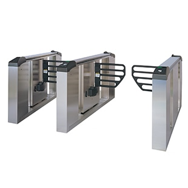
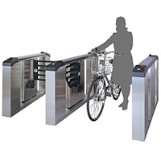
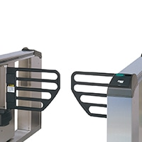
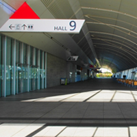

Device
Kumahira
エンターゲート／セキュリティゲート
安全性に配慮した屋外用セキュリティゲート
エンターゲートは、屋外または屋内外を繋ぐ箇所などへの設置が可能な「防水／防塵性能」に優れたエントランスセキュリティゲートです。不正な通行は検知し、扉（フラップ）を閉じて通行を抑止。強引な通行には、ブザーや出力信号に異常を連絡・対応します。

- 屋内／屋外
- 最大50人／分
- 通路幅
600mm / 1,100mm - フラップ高
810mm - フラップタイプ
- 安全重視
商品の特長
自転車や台車、車椅子の通行に配慮
両サイドにフラップが取り付けられたワイド通路であれば、通路幅1,050~1,150mmの確保が可能。車椅子や台車、自転車を押しながらの通行も可能です。

安全性・耐候性に優れたポリプロピレン製フラップ
フラップには安全性・耐候性に優れた軽量なポリプロピレン材を使用。接触しても怪我に繋がりにくい、安全性に配慮した設計です。

屋外設置により広がる可能性
JIS規格であるIP55（防水・防塵）の性能確認を実施。高い防水・防塵性能を持ち、ゲートの屋外設置を可能にします。

スペック一覧
| 本人照合端末 | 入退管理用の本人照合端末は別売品 | ||||||
|---|---|---|---|---|---|---|---|
| 通行方向 | 双方向通行可能 | ||||||
| 通行能力 | 1通路あたり通常25人/分、最大50人/分(入退室管理機器による） | ||||||
| 本体寸法※1 | W160×H900×D1,740mm(メインおよびサイド） | ||||||
| フラップ高さ | 床上810mm | ||||||
| 通路幅※2 | 標準1通路：600mm(550mm〜650mmの範囲で変更可能） ワイド1通路：1,100mm(1,050〜1,150mm の範囲で変更可能） |
||||||
※弊社ウェブサイト、カタログに記載された製品および仕様は、製品の改良などのために、仕様・外観は予告なしに変更することがありますのでご了承ください。ご注文に際しましては、最新の製品仕様を弊社窓口までご確認くださいますようお願いいたします。
※1 CRカバーの突出は除きます。
※2
ゲート本体の設置位置を変えることにより、上記の範囲内で通路幅を設定することが可能です。ただし、通路幅を変えると閉扉時のフラップとゲート本体または、フラップ間の隙間も変わります。